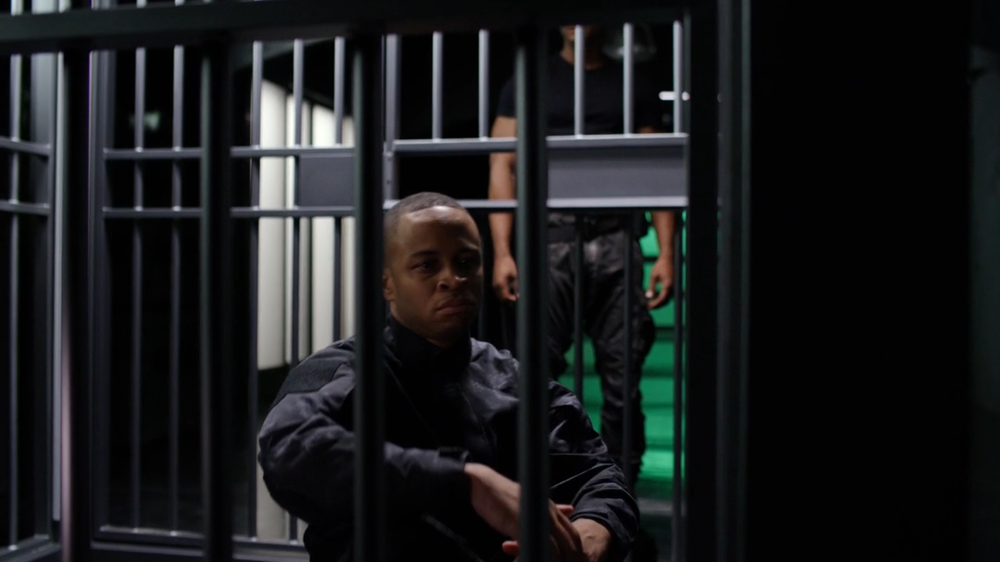

Arrow S04|E07 Brotherhood
Arrow’s fourth season has been a return to form. For the most part, it’s been consistently good, with moments of greatness mixed in. But tonight’s episode showed what’s truly possible with the new status quo. “Brotherhood” wasn’t just a strong Diggle-centric episode, it was one that further showcased the menace Damien Darhk, brought Ollie’s political career back into focus, gave the flashbacks the boost they needed and even delivered some of the best fight sequences in the show’s already impressive history. It was a resounding success, in other words.
The show seems to be finding a lot of success bringing in new directors this season. James Bamford worked as a stunt coordinator and fight choreographer for a number of Season 1 and 2 episodes, but this marked his first time behind the camera. Let’s hope it isn’t the last. Even if there was nothing out of the ordinary about the fight scenes this week (how many times have we seen criminals on motorcycles robbing an armored truck now?), the execution was amazing. Bamford really worked the camera during the various fights, sometimes pulling in close for a gritty, brutal feel and other times pulling out for a wider shot of the carnage.
I was especially impressed by the emphasis on longer takes during these scenes. You tend to expect a lot of quick, choppy cuts on shows like this when it comes to hand-to-hand combat. It’s quicker and easier to stitch together fight scenes that way, but the action suffers as a result. Here, though the camera rarely stayed still, it lingered on the fights rather than cutting away. Laurel fared the best in that regard. Her knock-down brawl with Andy in the elevator was great stuff. Needless to say, Bamford really put the actors (and their stunt doubles) through their paces.

This episode didn’t disappoint when it came to the scenes not centered around punching and kicking. Neal McDonough enjoyed one of his most memorable episodes yet. Darhk was electrifying in every scene, whether he was wooing/subtly threatening Ollie, welcoming his new recruits or not-so-subtly threatening Lance. While I still have to imagine that there’s a bigger threat than just Darhk himself planned for Season 4’s endgame, the character certainly has the charisma and gravitas to carry the season on his own.
Interestingly, though, this episode offered proof that Darhk is hardly infallible despite his vast resources and supernatural abilities. For one thing, he seems clueless about the fact that the Green Arrow and Star City’s new mayoral candidate are one and the same. For another, he bit off more than he could chew when he attacked Thea. She may well have stumbled across the key to defeating Darhk, which Malcolm will surely be all too happy to exploit.
This episode allowed David Ramsey to step up in a big way and show us a side of Diggle we rarely see. Whereas most of Diggle’s dramatic material this season and last centered around his hurt at being betrayed by Ollie, this week’s conflict hit him on a far different level. Ramsey delivered a solid performance as he explored Diggle’s vulnerable side, even battling back tears as his character worked through the realization that everything he ever believed about his brother was a lie.
Diggle went through a nice little character arc as he was forced to accept that his friend s were willing to throw down their lives for his family even if he didn’t deem Andy worth the sacrifice. The big moment came when Diggle showed up fashionably late to the final battle and said, “My brother needs me. My green brother.”
Despite the fact that last week’s episode seemed to be shuffling Ray off the table right after bringing him back into the picture, the character wound up sticking around for another week to work through some issues. It was great to have Brandon Routh back and interacting with Emily Bett Rickards a little more. But as with Diggle, Ray tapped into some aspects of his personality we don’t usually see. He seems less troubled by his long ordeal than the realization that he didn’t leave behind the legacy he was hoping for. Ray wasn’t his usual chipper self. He was wounded and lost, and that’s a great setup for his role in Legends of Tomorrow. Plus, we got to see him suit up and punch some Ghosts, and that certainly added to the impact of the final battle. With all these big moments playing out, Ollie took a bit of a backseat this week. However, there was some welcome progress on the political front. It was great to see Ollie wrestle with the idea of getting into bed with Darhk and ultimately decide that this battle has to be waged in the light. It should be interesting to see how Darhk responds to being jilted and which rival candidate he has in mind. Heck, maybe Darhk himself will run against Ollie. Who wouldn’t vote for someone that handsome and charming.
It was good to see the flashbacks get another kick in the pants this week. Conklin got some well-deserved comeuppance when Reiter uncovered his deception and forced Ollie to deliver the punishment. Ollie also has a real mission to carry out after stealing Reiter’s map. It was interesting to see how that development paralleled Lance’s own actions in the present. I wouldn’t be at all surprised if in both cases that turns out to be a test of loyalty that Lance and Ollie will fail. It also seems that Ollie hasn’t learned his lesson about confessing to his friends when he inadvertently kills their loved one. Hopefully this instance doesn’t wind up biting him on the ass quite as badly.
Next weeks episode preview: